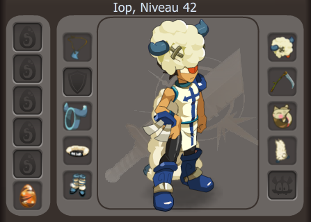

Dofus est un MMORPG au tour par tour créer par Ankama où les joueurs incarnent un personnage d'une classe choisie au préalable. En tant que joueur, vous y retrouverez une multitude d'armes et d'équipements en tous genre, une vingtaine de métiers différents et plusieurs centaines de monstres répartis en différentes zones sur les 10 000 cartes de jeu (portions de carte, sur lesquelles on se déplace d'ailleurs comme sur une carte) formant l'univers de Dofus, dont 95 % ne sont accessibles qu'aux abonnés. Il faut donc payer pour accéder pleinement aux fonctionnalités du jeu.
Les classes sont multiples, pour de nombreux styles de jeux (18 classes). Chaque classe possède des particularités et sorts qui lui sont propres. On peut incarner un Iop, un guerrier corps a corps caractérisé par sa stupidité, un Cra, un archer infligeant des dégâts à distance, un Sadida, puisant sa force de la nature et des poupées, ou encore le Xelor, qui manipule le temps à son avantage.
Le but du jeu est donc d'améliorer son personnage par tous les moyens possibles, notamment par l'expérience octroyée a la fin des combats. Cette expérience permet de monter en niveau, ce qui permet d'améliorer ses sorts et ses caractéristiques. Un personnage est défini par de nombreuses caractéristiques: les PV (points de vie) représentent les dégâts que nous pouvons subir avant de mourir, les PA (points d'action) représentent les actions que nous pouvons réaliser en un tour, sachant que chaques sorts coûtent un certain nombre de PA (de 1 à 6 pour les plus impactants), viennent ensuite les PM (points de mouvement) représentant le nombre de cases que nous pouvons parcourir en un tour. Enfin, il y a les caractéristiques qui augmentent les effets comme les dégâts de nos sorts, selon le type du sort : force, intelligence, chance ou agilité. A chaque niveau, nous gagnons 5 point de caractéristiquesque nous pouvons attribuer en vitalité pour augmenter les PV ou dans les types vu précedemment.
L'autre façon d'améliorer ses caractéristiques est de s'équiper correctement. La panoplie est très importante et déterminante pour terrasser des ennemis de plus en puissant. La panoplie la plus emblématique de Dofus est la panoplie du Bouftou. Elle est très efficace au début du jeu et ne requiert pas de condition de niveau élevé. Quand on possède la panoplie entière qui est composé d'une coiffe, une cape, un marteau, un anneau, des bottes, un collier et une ceinture, les bonus conférés sont impressionnant: des PV, 1 PA, de la force et de l'intelligence, des dommages... Maleuresement, il faut pas mal de kamas pour se payer une bonne panoplie, il faudra donc passer pas mal de temps sur les divers métiers proposés par le jeu pour gagner des kamas, la monnaie du jeu. Nous pourrons ensuite se débarasser de cette fameuse panoplie bouftou, pour en prendre une meilleure en fonction des niveau que nous avons gagné, comme celle du blop ou du bouftou royal.